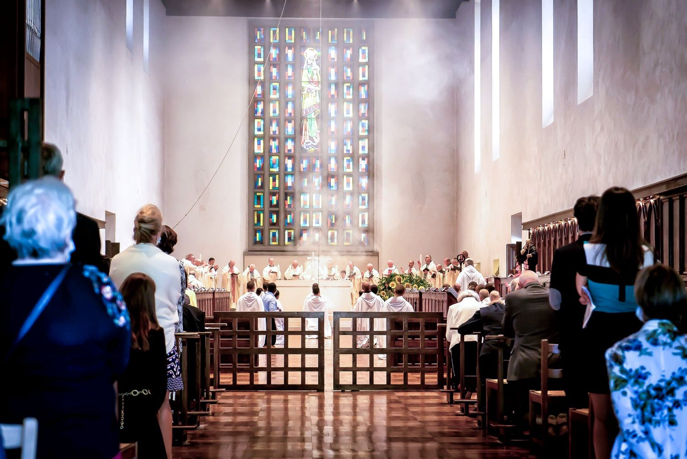
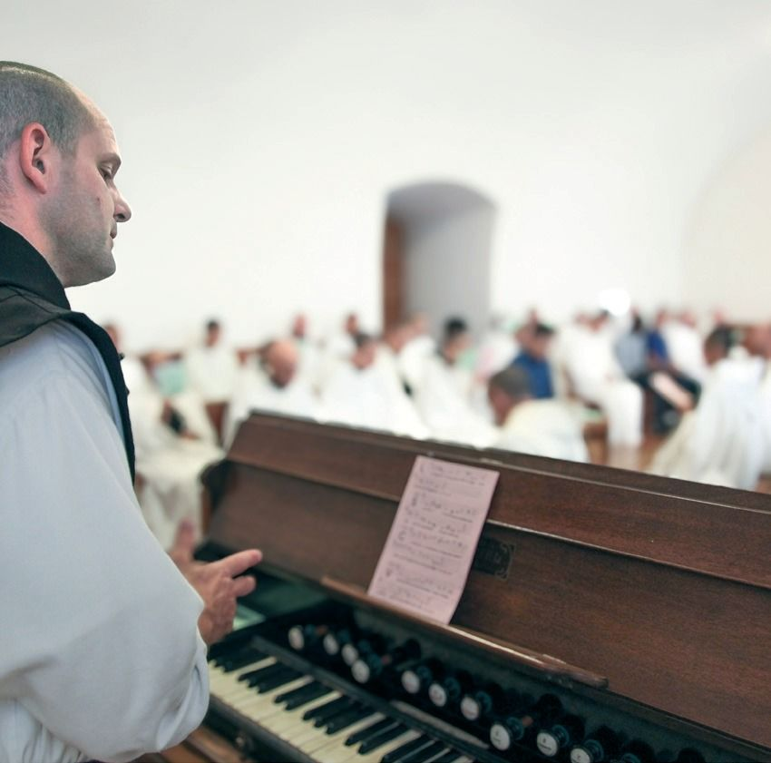
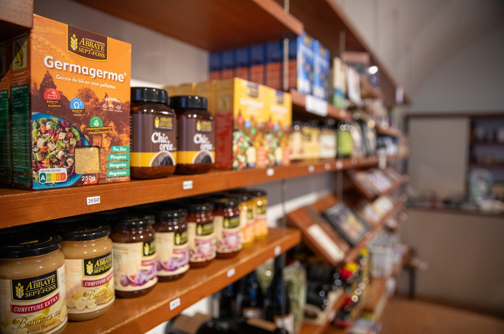
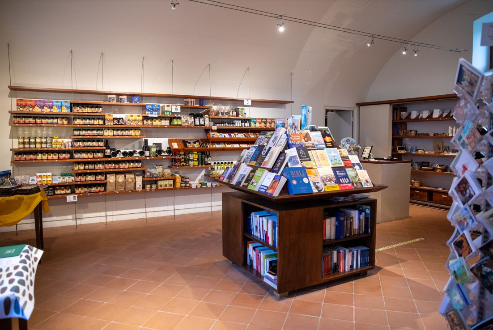
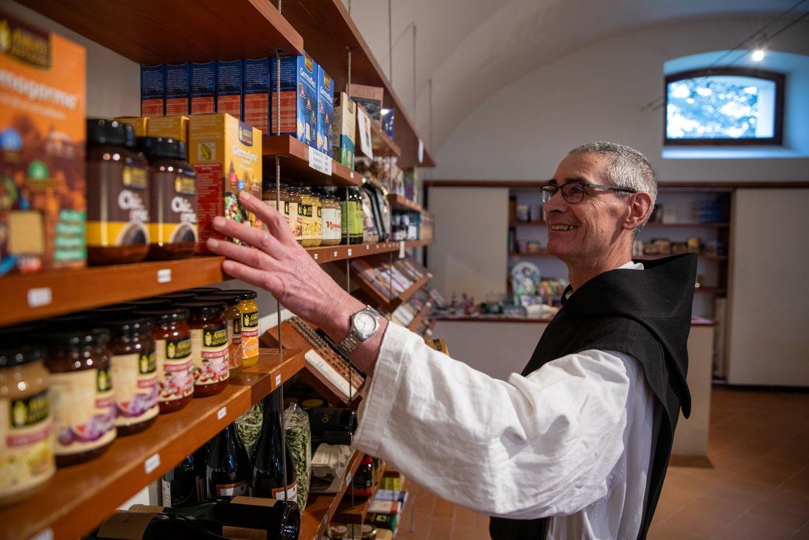

Les offices religieux, dont la messe, sont accessibles au public excepté les matines qui ne sont accessibles qu’aux retraitants. En dehors des heures d’ouverture de la boutique et donc de la présence du frère portier, le monastère est fermé au public. Autrement dit, si vous voulez assister à un office, veuillez consulter les horaires d’ouverture de la porterie.
| Dimanches | En semaine | |
|---|---|---|
| Matines | 3h45 | 3h45 |
| Messe | 10h20 précédée de Tierce | 6h45 avec Laudes |
| Tierce | 9h15 | |
| Sexte | 12h15 | 12h15 |
| None | 14h30 | 14h30 |
| Vêpres | 16h30 | 18h00 |
| Salut du Saint-Sacrement | 18h20 | |
| Complies | 20h00 | 20h00 |
| Dimanches | En semaine | |
|---|---|---|
| Matines | 3h30 | 3h30 |
| Messe | 10h20 précédée de Tierce | 6h45 avec Laudes |
| Tierce | 9h15 | |
| Sexte | 12h15 | 12h15 |
| None | 14h15 | 14h15 |
| Vêpres | 16h00 | 17h30 |
| Salut du Saint-Sacrement | 17h50 | |
| Complies | 19h30 | 19h30 |
Horaires de la solennité de Noël
(25 décembre)
Minuit — Messe solennelle
7h30 — Laudes
10h20 — Messe du jour de Noël
Autres offices du jour de Noël :
Horaires du dimanche
Horaires des offices pendant la Semaine Sainte
DIMANCHE DES RAMEAUX
10h : Messe commémorant l’entrée du Seigneur à Jérusalem
JEUDI SAINT
16h30 : Messe du soir en mémoire de la Cène du Seigneur
VENDREDI SAINT
15 h 00 : Célébration de la Passion du Seigneur
DIMANCHE DE PÂQUES
SAMEDI : 23 h 00 : Vigile pascale dans la Nuit Sainte
DIMANCHE : 10 h 20 : Tierce suivie de la messe du Jour de Pâques
LUNDI DE PÂQUES
Horaire du dimanche, le matin:
La messe à 10h20


Visitez notre magasin
À l’entrée du monastère se trouvent la porterie et un magasin qui vend nos produits et ceux d’autres monastères. Vous y trouverez aussi un grand choix d’articles religieux (chapelets, statues, croix, icônes, médailles…) et une librairie religieuse. La porterie est fermée pendant les offices.
| En semaine | Dimanches et Solennités | |
|---|---|---|
| De mai à octobre | 8h30 – 9h 9h45 – 12h 14h50 – 17h30 | 8h30 – 10h 11h50-12h10 14h50 – 16h15 17h10 – 18h |
| De novembre à avril | 8h30 – 9h 9h45 – 12h 14h35 – 17h | 8h30 – 10h 11h50 – 12h10 14h35 – 15h45 16h40 – 17h30 |


